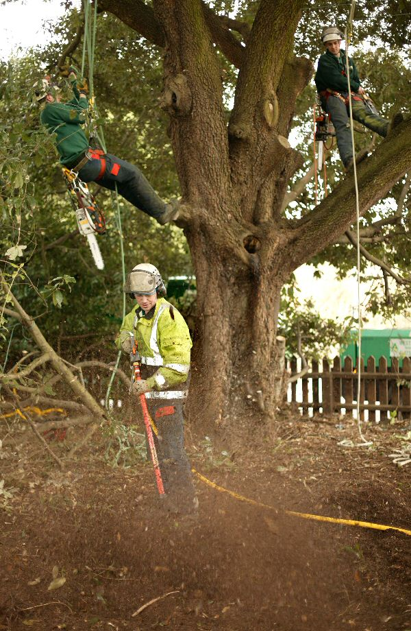

January 2007
Norton, Bury
St Edmunds
Building
will commence shortly in the village of Norton of a contemporary
style luxury new 6 bedroomed home with a large paddock garden.
The spacious accommodation will be over 3 floors and will include
a large family room off the hand built, fully fitted kitchen
leading to a garden room with a feature wooden vaulted ceiling.
With today's planning restrictions it is unusual to find a large
single house being built in the countryside.
January 2007
Dedham - New Home
Michael
Howard Homes have been appointed the main contractors for the
construcion of a new farmhouse style home in excess of 4,600
sq ft in Dedham, by the local farmer. They have been chosen
due to their long standing professional experience of building
luxury houses in the Dedham Vale area and their attention to
detail and empathy with the surroundings that they build in.
This home will be one of the most prestigious houses in Dedham.
December 2006
The Dedham Hall
Business Centre - All sold
This
small development of freehold offices have all been reserved
prior to completion of the site. There is still the chance to
own a freehold office built by MH Commercial ( A subsiduary
of Michael Howard Homes) as a new development The
Dedham Vale Business Centre
will be commencing early February of 11 business units in a
superb out-of-town location. For
further details please contact our agent Nicholas Percival on
01206 563222 or visit
www.mhcommercial.co.uk
September 2006
Building
is under way on Straight Road, Lexden, Colchester and all ready
one of these highly sought after bungalows has been reserved.
These bungalows are in a great location and are fully serviced
by all local amenities. There are two remaining now and they
are priced at £249,995. For further information or to
view the plans, please call our agents Palmer and Partners on
01206 572233
August 2006
The Dedham Hall Business Centre
Planning
permission has been granted for a 3,960 square ft. office and
crafts development with ample car parking in a central location
in Dedham. This will comprise of 6 units of approx 660 sq.ft
each in 4 separate buildings. This small business development
will be built to a very high specification in a contemporary
style featuring all the latest in technology and is within walking
distance of Dedham High Street. The units will be for sale at
£220 per sq.ft freehold. Building works will commence
in October with completion due in April 2007. For further details
please contact our agent Nicholas Percival on 01206 563222 or
visit www.mhcommercial.co.uk
www.mhcommercial.co.uk
July 2006
Bungalows in
Lexden
Planning
permission has been granted for 2 new 3 bedroom bungalows and
one refurbished 2 bedroom bungalow on Straight Road, Lexden,
Colchester. Building will commence September 2006 for completion
Spring 2007.
July 2006
The Dedham Vale Business Centre
Planning
permission has been granted for a 22,000 square ft. office and
crafts development with ample car parking in Dedham. Michel
Howard Homes will be creating a wonderful working environment
in the heart of the Dedham Vale and giving businesses of all
sizes the opportunity to purchase freehold their own contemporary
office premises within a small business development in this
highly sought after area. Dedham provides the ideal place for
a business whilst offering the peace and quiet of the surrounding
countryside, access to the major road networks is very close
by, the A12 being only a few minutes away. These offices will
be built to a very high specification as would be expected from
Michael Howard Homes and will feature all the latest technology.
Building will commence in November 2006 for completion by November
2007. For further details please contact our agent Nicholas
Percival on 01206 563222.
May 2006
Chestnut
House at Woodside Thurston has now been reserved
This fabulous development is
progresing well with the first home ready by the end of May.
Michael Howard Homes have created a unique development of just
six executive homes in a rural and secluded location nestling
within a site of matured trees. These homes, built to the highest
specifications and using reclaimed materials where practical
will blend in with the countryside from the day they are complete.
If you are interested in owning a Michael Howard Home, please
call us or complete the form on the contact
us page and we will keep you informed of our future developments.
April 2006
And
then there was one...
Ash House is reserved - Chestnut House is the last remaining
plot at Woodside at Thurston Now really
is the time to buy a unique family home in this exclusive development
of just 6 houses in a beautiful rural location but very close
to the Heritage market town of Bury St Edmunds. If
you would like to visit the site
please call us today on 01206 323666 or go to our Woodside
at Thurston pages on this website for more details.
April 2006
Last chance -
only 2 houses remaining at Woodside, Thurston, Nr Bury St Edmunds
There are only two of these fantastic
family homes available, Woodside is in a great rural location,
yet only minutes away from a very good road and rail network.
Ash House our 5 bedroomed show home will be available for viewing
with in the next month, shortly to be followed by Chestnut House,
the final 4 bedroom family home currently under construction.
If you would like to visit the site
please give us a call today on 01206 323666 or go to our Woodside
at Thurston pages on this website
March 2006
Only 3 plots
remaining at Woodside, Thurston, Nr Bury St Edmunds
Three plots have now been reserved
at Woodside, so only three are left! Plot 7 is sold and plots
5 and 6 are reserved. If you would like further details of this
unique development and the chance to be involved in personalising
your next new home in this fantastic location, please give us
a call to arrange a site visit today on 01206 323666 or go to
our Woodside
at Thurston pages on this website
February 2006
Woodside, Thurston,
Nr Bury St Edmunds
Building is well under way now at
Woodside and Plot 7 has been reserved all ready! We now have
our brochure ready giving full details of this unique development,
please call us to receive your copy and to visit the site on
01206 323666.
August 2005
Thurston - Planning permission granted for 6 individual executive
homes
Micheal Howard Homes has been granted
planning permission to build 6 individual luxury family homes
on the edge of the Suffolk village of Thurston.
These houses will be situated in mature grounds in a private
location. They will be 4 and 5 bedroomed houses and have a guide
price between £575,000 and £825,000. Building will
commence in October 2005 and with conservation and the environment
in mind as with all Michael Howard Homes, these houses will
be built empathetically to their surroundings and using re-claimed
materials where possible. For more information about these properties,
please contact our office on 01206 323666.
August 2005
Holbrook
Micheal Howard Homes has bought a
4 bedroom family home in the centre of the sought after Suffolk
village of Holbrook for a complete refurbishment. The house
is next to the church and set in beautiful mature gardens, it
will have a new kitchen and 2 new bathrooms. there is a detached
garage and private drive. RESERVED
July 2005
Lodge
construction has eye on the future -
Genoa
Lodge, Waldringfield
Open
weekend - Come and view at your leisure
Saturday 30th July 10am – 4pm and Sunday 31st July 11am
– 2pm
Michael
Howard Homes is building a New England-style home in the Suffolk
village of Waldringfield aimed at holiday home owners and people
who are planning now for their retirement.
The stunning three-bedroom property offers luxury accommodation
for homeowners who may enjoy good health and mobility now, but
who may need their accommodation to be more versatile as they
get older.
Genoa Lodge in Waldringfield is spacious and luxurious and does
not compromise on quality, but also takes into account the needs
of people getting older. There would be no need to move again
should circumstances make the owners less able.”
The ground floor of Genoa Lodge features a large bedroom with
en suite shower room and a spacious, open plan living area with
a feature vaulted ceiling. This area would enable self-contained
ground floor living should it ever be required. Upstairs there
is a master bedroom with en-suite bathroom, and a second bedroom
with an en-suite shower room.
An integrated vacuuming system has been installed so there is
no need to carry a heavy vacuum cleaner around the house. Each
floor has connections for a lightweight hose and the system
connects to a cylinder in the garage, which only requires emptying
two or three times a year.
In keeping with the Colonial New England style, the property
features a maintenance-free cladding exterior finish, steep
roof slope and dormer windows.
Genoa Lodge at Waldringfield is on a large plot with mature
trees and features a single cart lodge garage. Genoa Lodge is
just a few minutes walk to the waters edge of the river Deben.
“We have chosen to build Genoa Lodge in a village that
has good amenities, a great sailing club and which is a traditionally
popular community in which to relax or retire” added Adrian
Mann.
Genoa
Lodge is due for completion by the middle of July. The property
has a freehold price £435,000.
For
more information about this property please see our
present developments page
January 2005
Capel St Mary
Planning
consent has been granted at Capel St Mary for a substantial
four bedroom detached traditional farmhouse style property.
This property will be within walking distance
of local shops and amenities and is conveniently situated in
a quiet village location yet only 5 minutes from the A12.
To
receive updates on this development, complete the form on the
contact us page
January 2005
Two Luxury apartments and a bungalow in Stratford St Mary
Planning
consent has been granted for two luxury apartments and a two
bedroom bungalow in a stunning location beside the river in
the heart of Stratford St Mary. This much sought after
village set in the renowned Constable country offers good local
amenities and great access to the A12.
To
receive updates on this development, complete the form on the
contact us page
January
2005
Raydon
A planning application has now been granted to build a traditional
style four bedroom detached property in the village of Raydon.
This house will occupy a good size plot with mature trees to
the front and rear. It is in a non-estate position and
only 5 minutes from the A12. It is planned that this property
will be built to the same exacting standards expected from Michael
Howard Homes, using reclaimed roof tiles and other materials
where possible.
To
receive updates on this development, complete the form on the
contact us page
July 2004
Old Martlesham - only one remaining
Only
one of the three properties currently under construction at
Old Martlesham is still available for sale. for further details
of Orchard House, please
see our
present developments page
Aldeburgh
Planning consent has
been granted for a 3 bedroom New England style property on Saxmundham Road
in the much sought after Suffolk coastal town of Aldeburgh. Building
will commence in the autumn 2004.
To receive updates on this development, complete the form
on the contact us page
June 2004
Great Tey
Planning has been granted for a four bedroom detached house in Great Tey, Nr
Colchester. Close to a mainline station to Liverpool Street. The
house will benefit from having views over open fields to the front and the
rear. Work will begin late summer 2004
To receive updates on this development, complete the form
on the contact us page
June 2004
Old Martlesham
Building has commenced at the site on Bealings Road, Old Martlesham.
Two of the three properties are currently available, the first of which is
due for completion by the end of 2004. Please see our present
developments page on this website or contact us for further details.
To receive updates on this development, complete the form
on the contact us page
May 2004
Waldringfield
A
planning application is in for a 3 bed chalet style property on a good size
plot about 5 minutes walk from the water front of this pretty Suffolk
village.
To receive updates on this development, complete the form
on the contact us page
March 2004
Developer uses new technology to protect oak trees during construction
|
Environmentally-conscious
property developer Michael Howard Homes is pulling out all the stops to
ensure that two mature holm oak trees are protected during the
construction of a luxury four-bedroom house in the village of Holbrook.
The Dedham-based developer
has called in a specialist team of tree experts to carry out advanced
new tree treatments, using the very latest in technology, to protect the
roots of the holm oaks (quercus ilex) during the construction of
a driveway to the new £435,000 property which is due to be completed in
the summer.
Mike Dewhurst from Eastwood
Tree Services in Coddenham said: “Taking the driveway over the root
system of the trees is normally detrimental to the structure of the
roots, but with new technology and materials the damaging effect can be
dramatically reduced.
“We will be feeding the
root system by injecting into it special products that will develop the
root system to become more efficient in extracting water and nutrients
from the soil, thus enabling the trees to overcome the stress of the new
entrance.”
The root system of a mature
tree can extend between one and two times the height and spread of the
tree. The main feeding roots of a tree are located within the first
200mm of the soil level so any compaction or soil removed will cause
damage without specialist equipment being used.
“We will be using a special
air spade that allows us to excavate within the root system without any
long-term damage to the health of the tree,” added Mike Dewhurst. “This
is cutting-edge tree care and our staff our fully trained in this new
approach and we are specialists in this field.
“Builders are not normally
sympathetic to trees and Michael Howard Home’s taking the trouble and
expense to protect
these holm oaks is an excellent example of a professional builder
working with a professional tree company.”
The driveway being installed over the root system will
spread the weight of the vehicles by means of a very strong mesh
allowing the weight to be spread over the roots.
It will be constructed of a porous material enabling the
water to percolate into the root system and air and
gases to be exchanged.
Adrian
Mann (left) Construction Director, Michael Howard Homes and Michael
Dewhurst MD, Eastwood Tree Services, inspecting Holm Oak tree in
Holbrook |
 |
|
Pruning of Holm Oak and
aerating soil without damaging vital root system
Michael
Howard Homes is experienced in
building in conservation areas and builds properties with empathy for
the area in which it is developing. “The protection of the environment
in which we build is of great importance to us and we will invest
wherever possible in the necessary support and services to enable us to
maintain the environment during construction,” said Michael Howard Homes
construction director Adrian Mann.
“Eastwood Tree Services was the obvious
choice for this project as its staff are experienced and highly trained
in this unusual field. This is an expensive operation but we believe it
is more than worth it to protect these beautiful old trees.
The
holm oaks will be monitored over the next two years to make sure they
retain their beauty in the village.”
The new property, Holm
Oaks, will be completed in August. It is set on a secluded plot in the
heart of Holbrook and will be of brick and tile construction, using
reclaimed roof tiles.
Michael
Howard Homes specialises in
designing, building and refurbishing individual properties of
distinction and style, paying great attention to detail and using only
the finest quality materials.
|
|
For further information please contact Caroline Gasking,
Pink Creative Marketing and Communication on 01787 377565 or 07767
777800
|
Date: Saturday 6th and Sunday 7th March 2004 - Open weekend Aldeburgh
Way O' The Wind,
Saxmundham Road, Aldeburgh will be open for the weekend to pop in and view.
This is a family home built in the 1920's and has been sympathetically
restored and retains some interesting features. For more information
please visit our present developments page on this website.
Date: January 2004
Michael Howard
Homes has acquired a site at Old Martlesham for 3 detached family homes.
Planning is applied for.
Date: January 2004
Planning
consent has been granted for a new four-bedroom detached house set in mature
gardens in the heart of the village of Holbrook. Work will commence at
the beginning of March 2004.
To receive updates on this development, complete the form
on the contact us page
Date: 1st September 2003
Contaminated Dedham land made safe
by local developer
A controversial piece of contaminated and potentially
dangerous land in the village of Dedham has been cleaned up by local
property developer Michael Howard Homes and work has begun on building a
brand new £1 million plus luxury home on the site.
The land, the site of the old gas works in Mill Lane, was so contaminated
that it had become potentially harmful to the environment. Michael Howard
Homes demolished former The Mallard restaurant on the site and cleared some
1500 tonnes of contaminated waste from the area to make it safe and suitable
for development.
“This was a very difficult and hugely expensive clean-up operation due to
the extent of the contamination and the fact that the site is close to a
river,” said Adrian Mann, construction director of Dedham-based Michael
Howard Homes.
Michael Howard Homes consulted closely with Colchester Borough Council
planners and the Dedham Vale Society to produced agreed plans for the new
property, Millstream House, which will be a five-bedroom house featuring a
four-car lodge and 1,000-bottle wine cellar. It will be built using
traditional methods and incorporating locally reclaimed materials.
|
|
The company is used to building on brownfield sites in conservation areas
and builds properties with empathy for the area in which it is developing.
Mr Mann says that the appearance of the individually-designed Millstream
House will be in keeping with the village of Dedham.
Michael Howard Homes specialises in designing, building and refurbishing
individual properties of distinction and style, paying great attention to
detail and using only the finest quality materials.
Ends
For further information please contact Caroline Gasking,
Pink Creative Marketing and Communication, 07767 777800 or Adrian
Mann, Michael Howard Homes, 01206 323666
|
|